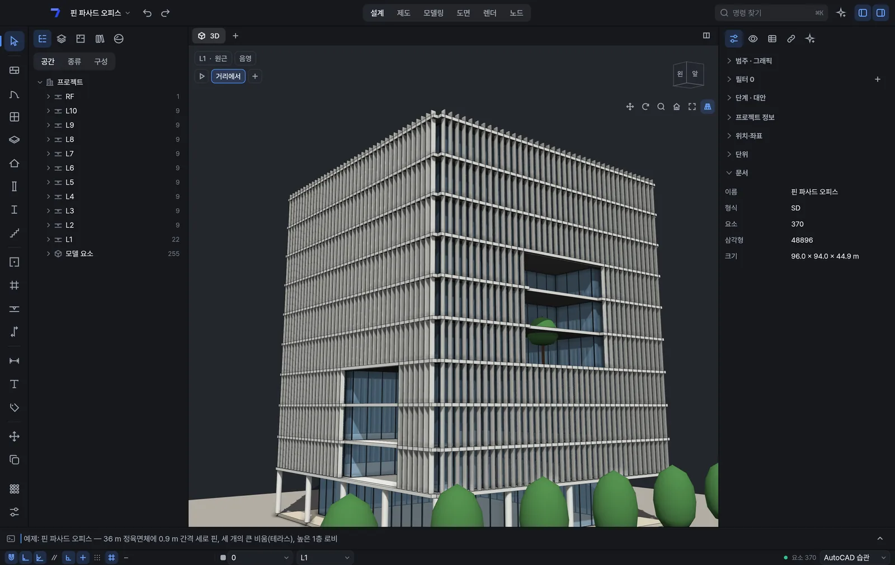
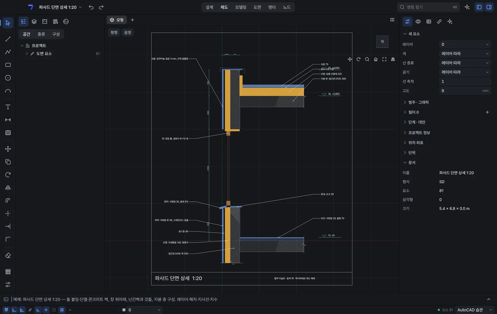
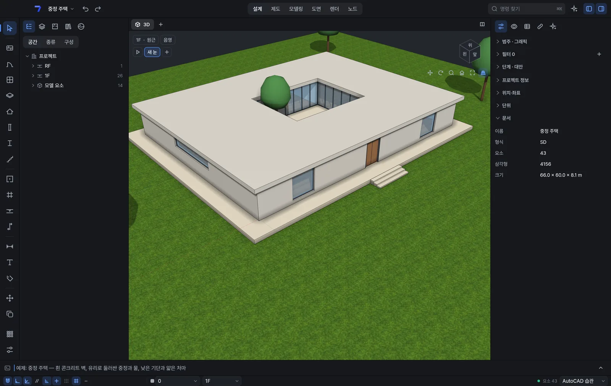
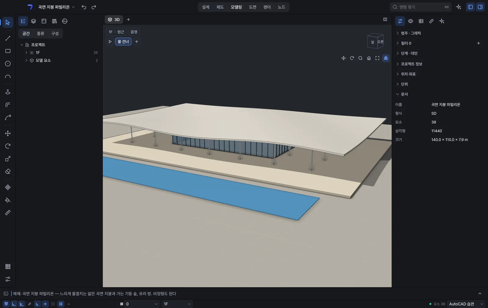

5つのソフトの代わりに、
みんなのCADをひとつ。
AutoCAD・SketchUp・Rhino・Revit・Archicadを行き来していた作業が、ひとつのモデルでつながります。図面からマス・曲面・ノード・BIMまで、誰でも無料で。
無料 · Mac（Apple Silicon・Intel、公証済みですぐに開けます）· Windows 10・11 x64· すべてのリリース
プレビュー版です。直しながら新しい版をこまめに出します。使いにくい点はアプリの ⌘⇧F（WindowsはCtrl+Shift+F） か GitHub へ。
5つの作業を、ひとつのモデルで
AutoCAD・SketchUp・Rhino・Grasshopper・Revitを行き来していた作業を、ひとつの画面で。使い慣れたコマンド名とショートカットもそのままです。
コマンドラインとエイリアス、スナップ、寸法・ハッチ・ブロックで図面を引きます。
近いツール · AutoCAD
面を押し出してマスを立ち上げ、繰り返すものはコンポーネントにまとめます。
近いツール · SketchUp
NURBSの曲線と曲面を制御点で整え、SubDやメッシュも扱います。
近いツール · Rhino
ノードをつないで形のルールを組み、値を変えながら案を比べます。
近いツール · Grasshopper
壁・ドア・窓・スラブ・屋根・階段で建て、平面・断面・立面と集計表をモデルから出します。
近いツール · Revit · Archicad
図面はモデルから生まれる
サンプルで見る、3D・図面シート・コマンド検索。スタート画面の「サンプルを見る」から開けます。






どこから来た図面も、
そのまま続きから
受け取ったファイルを開いて作業を続け、相手が使う形式やオープン標準で書き出します。
ラベルのない形式は、開いて保存できます。公開テストファイル921件のうち910件を開けます。
- AutoCAD
- DWGDXFR12〜2018形式で保存
- SketchUp
- SKP
- Rhino
- 3DMSTEP
- Grasshopper
- GH読み込み
- Revit
- RVT読み込みRFA読み込みIFC
- Archicad
- IFCIFCでやり取り
- オープン標準
- IFCglTFOBJPDFIFC 2x3・4・4.3
AIと話が通じる、
新しいCAD
HyperSeven CADは、はじめからAIと一緒に使うためにつくっています。図面とモデルが壁・ドア・階といった構造をもつデータなので、AIは言葉で頼んだことを正確に理解して実行します。繰り返しの作業はAIがツールにまとめ、変更はまず見せてから人が確定します。
- 言葉で頼む
- MCPでAIエージェントとつなぐ
- Pythonでツールをつくる
学生にも、設計事務所にも、同じCADを
公開後は、すべての機能を誰でも無料で使えます。ライセンスを気にせず学び、同じ道具でそのまま実務へ。
使い慣れたコマンド名とショートカットで
AutoCAD・SketchUp・Rhino・Revit・Archicadで使っていたコマンド名とショートカットで探して使えます。AutoCADのacad.pgpやRevitのショートカットファイルも取り込めます。
AIと一緒に、決めるのは人
アプリの中でAIに言葉で頼むことも、MCPでエージェントをつなぐこともできます。必要な道具はPythonやプラグインでAIと一緒に作れます。AIの結果は提案として残し、確定するのは人です。
Mac・Windows用プレビューをどうぞ
Mac（Apple Silicon・Intel）とWindows 10・11（x64）用の0.1.0プレビューを今すぐ使えます。Windows版は展開してすぐ使えるzipです。新しい版が出るとアプリが知らせます。Linuxが続きます。
AutoCADおよびRevitはAutodesk、SketchUpはTrimble、RhinoおよびGrasshopperはRobert McNeel & Associates、ArchicadはGraphisoftの商標です。HyperSeven CADはこれらの企業とは関係ありません。